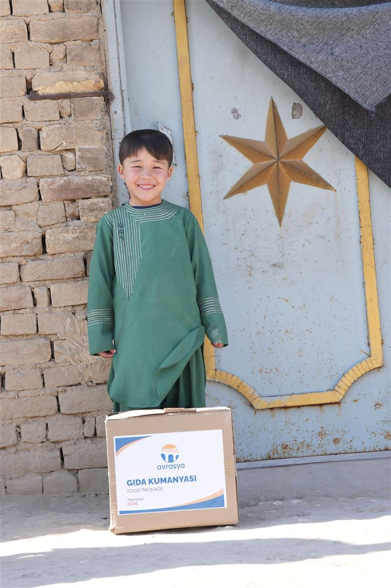
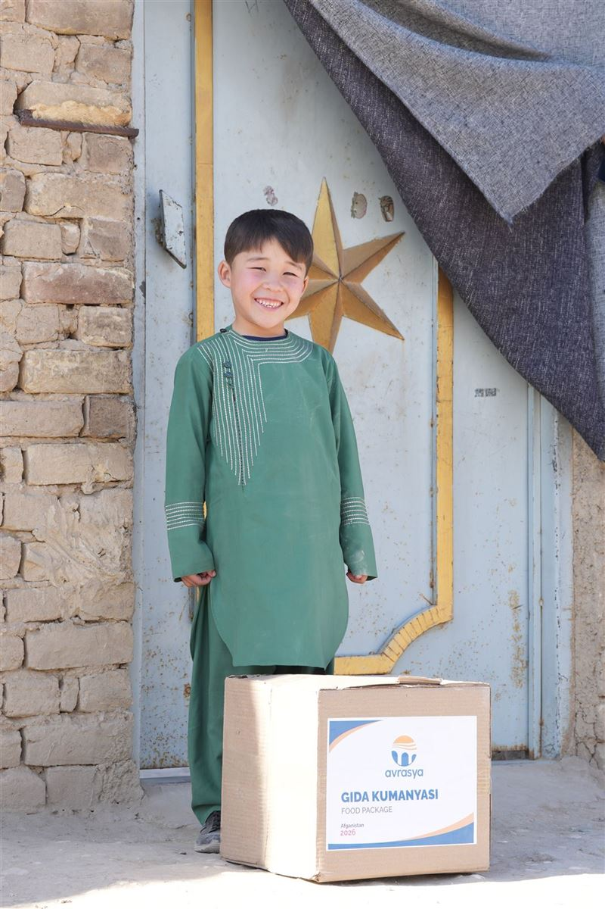
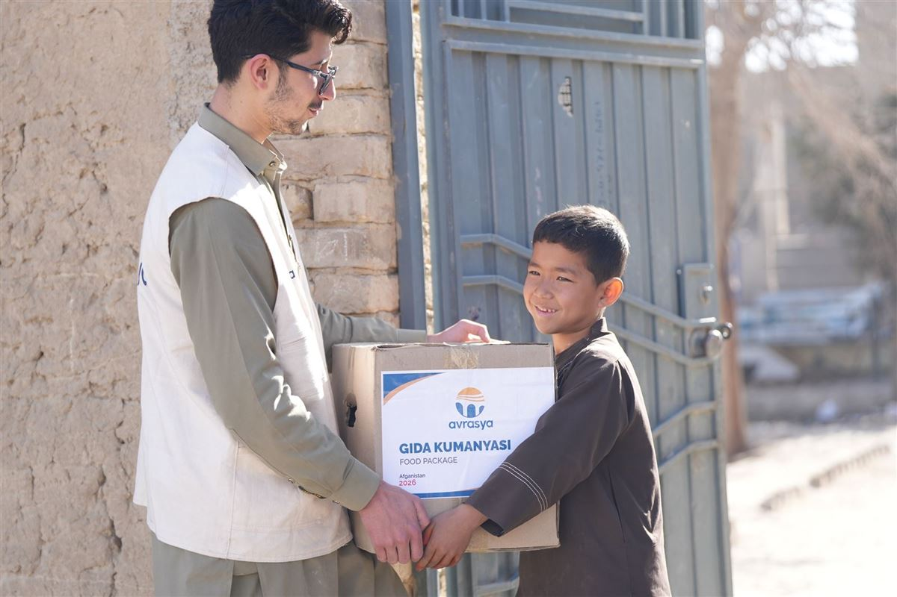

Temel gıda ihtiyaçlarını karşılamakta zorlanan ailelere, içinde un, yağ, bulgur, bakliyat ve temel gıda maddeleri bulunan kumanya paketleri ulaştırıyoruz.
 Kumanya dağıtımından kareler
Kumanya dağıtımından kareler
Kumanya projemiz kapsamında; bağışçılarımızın destekleriyle hazırlanan temel gıda paketlerini, daha önceden tespit edilen ihtiyaç sahibi ailelere kapı kapı ulaştırıyoruz. Özellikle Ramazan ayı ve kış döneminde yoğunlaşan bu çalışmamız, ailelerin sofralarının bereketlenmesine ve temel ihtiyaçlarını güvenle karşılayabilmesine katkı sağlıyor.
Her kumanya paketi; un, yağ, bulgur, pirinç, şeker, mercimek, makarna, çay ve konserve gibi uzun ömürlü temel gıdalardan oluşur. Paket içeriği, bölgenin tüketim alışkanlıkları ve aile büyüklüğü dikkate alınarak belirlenir. Dağıtımlar saha ekiplerimiz ve gönüllülerimizle birlikte gerçekleştirilir; her aile, başvuru önceliğine göre eşit ve adil bir şekilde desteklenir.
Dar gelirli aileler, yetim ve öksüz haneler, afetten etkilenen aileler, yaşlılar.
Un, yağ, bakliyat, makarna, şeker, çay ve konserve gibi temel gıda maddeleri.
Ramazan ayı, kış dönemi ve yıl boyu düzenli dağıtımlar.
Kumanya yardımlarımız, ihtiyaç sahibine ulaşana kadar belirli bir planlama döngüsüyle yürütülür. Bu süreç; tespitten teslimata kadar her adımın şeffaf ve denetlenebilir olmasını sağlar.
Muhtarlıklar ve yerel kuruluşlarla birlikte ihtiyaç sahibi aileler tespit edilir ve aile formları doldurulur.
Hedeflenen paket sayısına göre bağış kampanyası düzenlenir, tedarikçilerden fiyat teklifleri alınır.
Gönüllü ekiplerimizle hijyenik ortamda gıda paketleri hazırlanır, içerik listesi paketlere eklenir.
Kapı kapı ve merkezi noktalardan dağıtım yapılır; teslim tutanakları alınır.
Dağıtılan paket sayısı, ulaşılan aile sayısı ve fotoğraflar bağışçılarla paylaşılır.
Kumanya dağıtım çalışmalarımızdan kareler:



Bu sayfa, sahadan yeni fotoğraflar eklendikçe güncellenecektir.
Kumanya yardımlarımız hakkında merak edilenler:
Paketlerde un, yağ, bulgur, pirinç, şeker, mercimek, makarna, çay ve konserve gibi temel gıda maddeleri yer alır.
Ramazan ayı ve kış döneminde yoğunlaşan dağıtımlar, yıl boyunca düzenli olarak devam eder.
Kampanya dönemlerinde derneğimizin bağış hesapları üzerinden bir veya birden fazla aileye kumanya bağışı yapabilirsiniz.
Muhtarlıklar ve yerel kuruluşlar aracılığıyla yapılan ihtiyaç başvuruları saha ekibimizce değerlendirilir.
Dar gelirli ailelere, yetim ve öksüz hanelere, yalnız yaşayan yaşlılara ve afetten etkilenen ailelere kapı kapı teslim edilir.